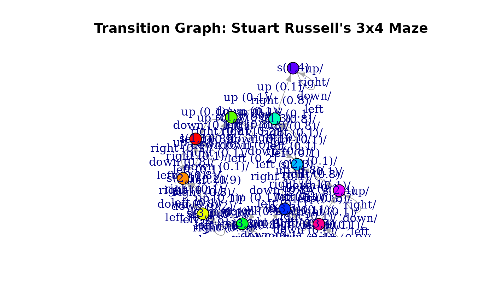
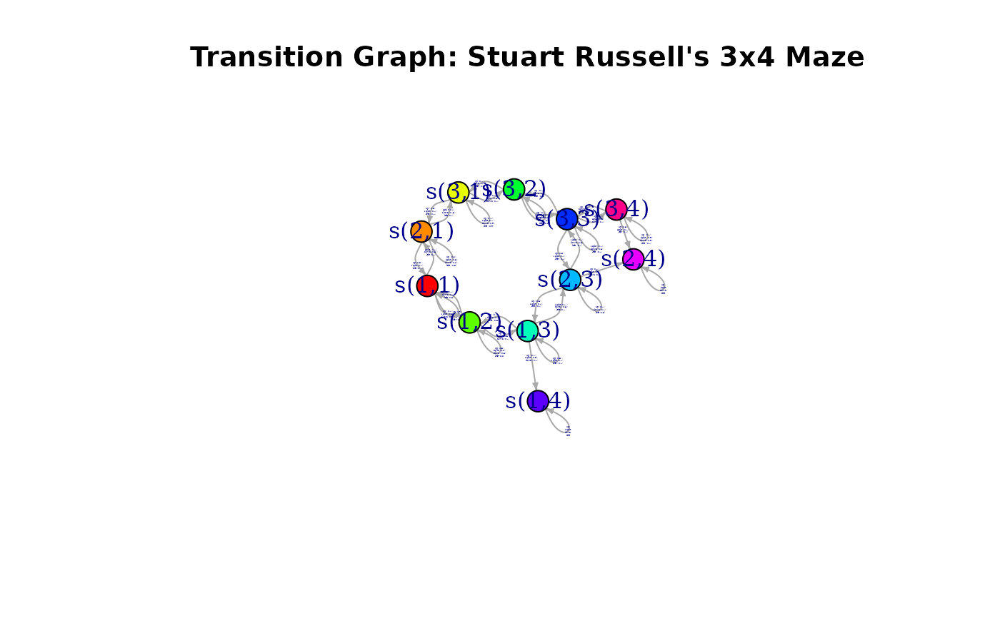
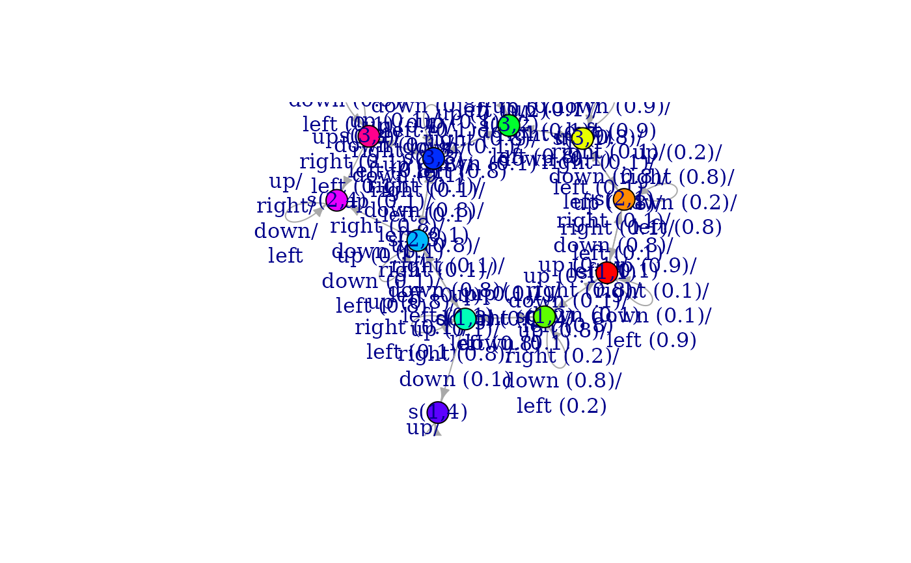
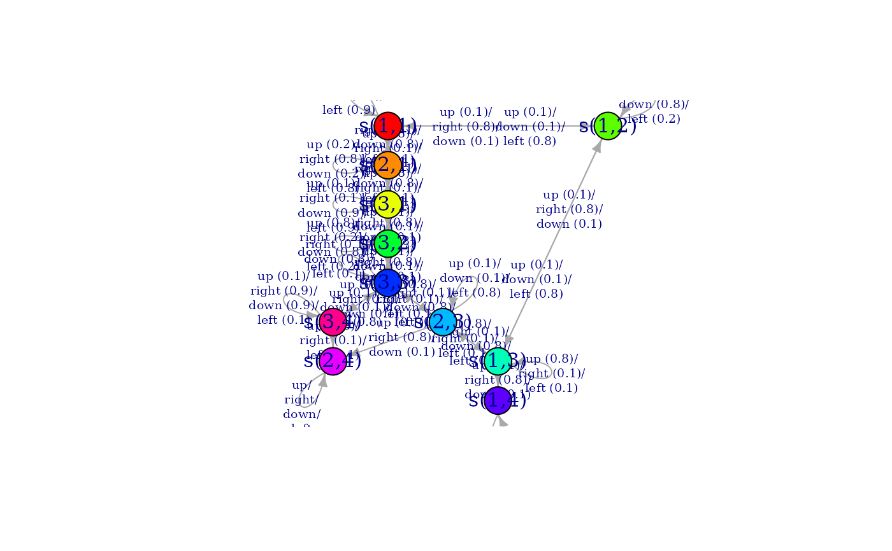

Returns the transition model as an igraph object.
Usage
transition_graph(
x,
action = NULL,
state_col = NULL,
simplify_transitions = TRUE,
remove_unavailable_actions = TRUE
)
plot_transition_graph(
x,
action = NULL,
state_col = NULL,
simplify_transitions = TRUE,
main = NULL,
...
)
curve_multiple_directed(graph, start = 0.3)Arguments
- x
object of class MDP.
- action
the name or id of an action or a set of actions. By default the transition model for all actions is returned.
- state_col
colors used to represent the states.
- simplify_transitions
logical; combine parallel transition arcs into a single arc.
logical; don't show arrows for unavailable actions.
- main
a main title for the plot.
- ...
further arguments are passed on to
igraph::plot.igraph().- graph
The input graph.
- start
The curvature at the two extreme edges.
Details
The transition model of an MDP is a Markov chain. This function extracts it as an igraph object.
See also
Other MDP:
MDP(),
absorbing_states(),
act(),
action_state_helpers,
available_actions(),
find_reachable_states(),
reachable_states(),
sample_MDP(),
sample_MDP.MDPSample(),
start,
transition_matrix(),
unreachable_states()
Other visualization:
gridworld
Examples
data("Maze")
g <- transition_graph(Maze)
g
#> IGRAPH c8e07ef DN-- 11 32 --
#> + attr: name (v/c), color (v/c), label (e/c)
#> + edges from c8e07ef (vertex names):
#> [1] s(1,1)->s(1,1) s(1,1)->s(2,1) s(1,1)->s(1,2) s(2,1)->s(1,1) s(2,1)->s(2,1)
#> [6] s(2,1)->s(3,1) s(3,1)->s(2,1) s(3,1)->s(3,1) s(3,1)->s(3,2) s(1,2)->s(1,1)
#> [11] s(1,2)->s(1,2) s(1,2)->s(1,3) s(3,2)->s(3,1) s(3,2)->s(3,2) s(3,2)->s(3,3)
#> [16] s(1,3)->s(1,2) s(1,3)->s(1,3) s(1,3)->s(2,3) s(1,3)->s(1,4) s(2,3)->s(1,3)
#> [21] s(2,3)->s(2,3) s(2,3)->s(3,3) s(2,3)->s(2,4) s(3,3)->s(3,2) s(3,3)->s(2,3)
#> [26] s(3,3)->s(3,3) s(3,3)->s(3,4) s(1,4)->s(1,4) s(2,4)->s(2,4) s(3,4)->s(3,3)
#> [31] s(3,4)->s(2,4) s(3,4)->s(3,4)
plot_transition_graph(Maze)

plot_transition_graph(Maze,
vertex.size = 20,
edge.label.cex = .1, edge.arrow.size = .5, margin = .5
)

## Plot using the igraph library
library(igraph)
#>
#> Attaching package: ‘igraph’
#> The following objects are masked from ‘package:stats’:
#>
#> decompose, spectrum
#> The following object is masked from ‘package:base’:
#>
#> union
plot(g)

# plot with a different layout
plot(g,
layout = igraph::layout_with_sugiyama,
vertex.size = 20,
edge.label.cex = .6
)

## Use visNetwork (if installed)
if (require(visNetwork)) {
g_vn <- toVisNetworkData(g)
nodes <- g_vn$nodes
edges <- g_vn$edges
visNetwork(nodes, edges) %>%
visNodes(physics = FALSE) %>%
visEdges(smooth = list(type = "curvedCW", roundness = .6), arrows = "to")
}
#> Loading required package: visNetwork